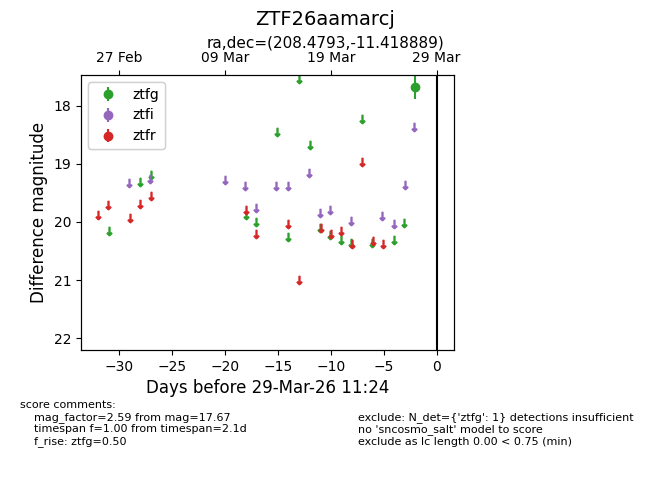
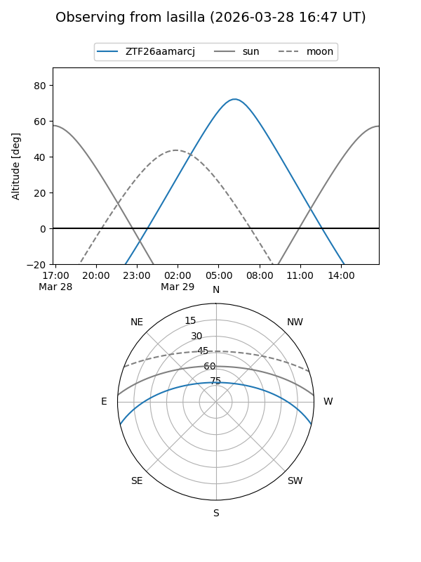
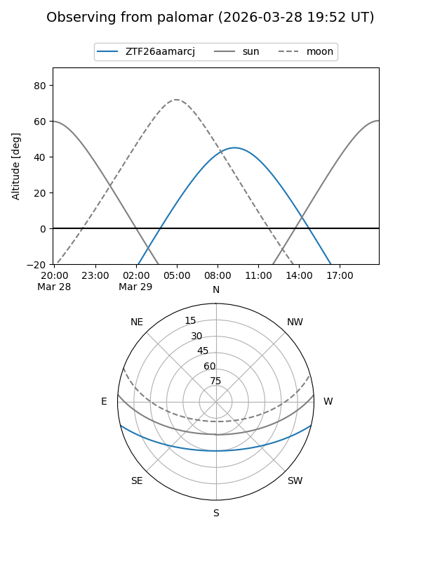

ZTF26aamarcj
Target ZTF26aamarcj at 2026-03-29 11:27
Aliases and brokers:
FINK: link
Lasair: link
ALeRCE: link
alt names
ZTF26aamarcj (ztf,fink_ztf)
Coordinates:
equatorial (ra, dec) = 208.4793,-11.41889
equatorial (HMS+DMS) = 13:53:55.03,-11:25:08.00
galactic (l, b) = (326.4433,+48.57986)
Flags:
Photometry:
last ztfg=17.67
1 ztfg detections
Lightcurve

Visibility


Additional plots